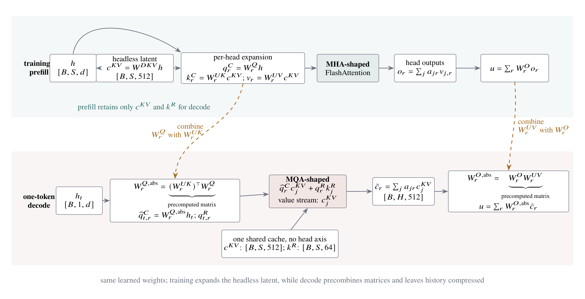

- KV Cache: why decode becomes bandwidth-bound
- MHA, GQA, and MQA: sharing K/V heads
- Grouped-Head Decoding: reusing each K/V load
- Flash-Decoding: splitting a long KV sequence
- Paged Attention: mapping logical tokens to physical blocks
- Multi-Head Latent Attention (MLA): expanding for training and absorbing for decode
- Cache and Compute Costs: smaller records, the same dense pair count
1. KV Cache: why decode becomes bandwidth-bound
In Part I, we introduced FlashAttention as a way to avoid materializing the full \(L\times L\) score and probability matrices. That solves a major training and prefill problem, but autoregressive decode has a different shape. After the prompt, the model generates one token at a time. At step \(t\), it forms one new query while every attention layer must reread the keys and values of the entire prefix.
For one layer, the decode tensors have the rough shape
The query side contains only one row, but the cache grows with context length \(L\). For MHA, where \(H_{kv}=H_q\), one decode step reads roughly \(2LH_qd_h\) cached elements per layer to produce one token. Across many layers and concurrently served sequences, the cache occupies substantial HBM capacity and its repeated reads consume substantial bandwidth. Meanwhile, \(S_q=1\) removes the large query-row dimension that kept the prefill kernel busy.
This gives us three concrete problems rather than one vague “attention bottleneck”:
- Cache capacity and bandwidth: how many numbers must each past token retain and reread?
- KV reuse inside a decode program: when several query heads share one KV head, can one load serve all of them?
- Decode parallelism: how do we create enough independent GPU work when there is only one new query token?
We will attack them in that order. GQA and MQA reduce the number of cached KV heads. Grouped-head kernels reuse one loaded KV tile across several query heads. Flash-Decoding and split-KV divide a long prefix among more programs. Paged Attention stores variable-length caches without reserving one contiguous maximum-length buffer per request. MLA then compresses each cached token into a learned latent and changes the shape of the decode kernel.
2. MHA, GQA, and MQA: sharing K/V heads
GQA uses the same head-sharing rule in training, prefill, and decode, but those stages do not have the same kernel shape. We find it useful to separate them before touching any code:
| Stage | Query | Keys and values | Kernel in this article |
|---|---|---|---|
| Training | \(Q:[B,H_q,L,D_{qk}]\) | \(K:[B,H_{kv},L,D_{qk}]\) \(V:[B,H_{kv},L,D_v]\) | Full-sequence FlashAttention forward and backward |
| Inference prefill | \(Q:[B,H_q,L_{prompt},D_{qk}]\) | \(K:[B,H_{kv},L_{prompt},D_{qk}]\) \(V:[B,H_{kv},L_{prompt},D_v]\) | The same full-sequence forward kernel |
| Inference decode | \(Q:[B,H_q,1,D_{qk}]\) | \(K:[B,H_{kv},L_{cache},D_{qk}]\) \(V:[B,H_{kv},L_{cache},D_v]\) | The grouped-head kernel in Section 3 |
This section handles the first two rows. We start from the MHA FlashAttention kernel in Part I and change it into a full-sequence GQA/MQA kernel. Section 3 will keep the same attention formula but reorganize the programs for \(S_q=1\).
Head sharing changes which K/V head each query head reads
The model uses the same head mapping in every stage. Its memory consequence is easiest to see during decode: at step \(t\), we append the new key and value to the cache, and every later step will reread those records. GQA and MQA reduce how many complete KV heads we retain for each token.
Let \(H_q\) be the number of query heads, \(H_{kv}\) the number of KV heads, and
MHA is the endpoint \(G=1\): every query head has its own K/V head. MQA is the other endpoint \(H_{kv}=1\): every query head shares the same K/V. GQA fills the interval. For example, \(H_q=8,H_{kv}=2\) gives \(G=4\): query heads \(0,1,2,3\) read KV head 0, while query heads \(4,5,6,7\) read KV head 1.
With head width \(d_h\) and context length \(L\), the cached element count falls from
Every query head still scores all \(L\) allowed positions. We have compressed the head axis of the cache, not sparsified the time axis.
The head mapping appears directly in the attention equations:
For \(H_q=8,H_{kv}=2\), query heads 0 through 3 therefore read the same K/V head 0, but they still produce four different score matrices because their Q heads differ.
Start with the Part I MHA kernel and patch the head index
Part I assigned one program to one query tile from one query head. The full-sequence GQA kernel keeps that ownership and writes its grid in tensor-axis order as (batch, query_head, query_block). One program still streams all KV tiles for its query tile. The important change is visible near the top of the complete kernel:
Q and O are addressed with query_head; K and V are addressed with kv_head. The score calculation and online-softmax recurrence are the same ones we already built in Part I. We keep the entire kernel below so that the changed pointers can be read in context.
Complete Triton kernel: full-sequence MHA/GQA/MQA forward
@triton.jit
def _flash_gqa_fwd_kernel(
Q, K, V, O, LSE,
stride_qb, stride_qh, stride_qm, stride_qd,
stride_kb, stride_kh, stride_kn, stride_kd,
stride_vb, stride_vh, stride_vn, stride_vd,
stride_ob, stride_oh, stride_om, stride_od,
stride_lb, stride_lh, stride_lm,
M: tl.constexpr,
N: tl.constexpr,
D_QK: tl.constexpr,
D_V: tl.constexpr,
GROUP_SIZE: tl.constexpr,
SCALE: tl.constexpr,
CAUSAL: tl.constexpr,
BLOCK_M: tl.constexpr,
BLOCK_N: tl.constexpr,
BLOCK_DQK: tl.constexpr,
BLOCK_DV: tl.constexpr,
):
batch = tl.program_id(0)
query_head = tl.program_id(1)
query_block = tl.program_id(2)
# GQA patch: Q/O keep query_head; K/V use the shared kv_head.
kv_head = query_head // GROUP_SIZE
offs_m = query_block * BLOCK_M + tl.arange(0, BLOCK_M)
offs_n_base = tl.arange(0, BLOCK_N)
offs_qk = tl.arange(0, BLOCK_DQK)
offs_v = tl.arange(0, BLOCK_DV)
mask_m = offs_m < M
mask_qk = offs_qk < D_QK
mask_v = offs_v < D_V
q_ptrs = (
Q
+ batch * stride_qb
+ query_head * stride_qh
+ offs_m[:, None] * stride_qm
+ offs_qk[None, :] * stride_qd
)
q = tl.load(q_ptrs, mask=mask_m[:, None] & mask_qk[None, :], other=0.0)
# The online-softmax state is unchanged from Part I.
m_i = tl.full([BLOCK_M], -float("inf"), tl.float32)
l_i = tl.zeros([BLOCK_M], tl.float32)
acc = tl.zeros([BLOCK_M, BLOCK_DV], tl.float32)
for start_n in range(0, N, BLOCK_N):
offs_n = start_n + offs_n_base
mask_n = offs_n < N
# K and V use kv_head rather than query_head.
k_ptrs = (
K
+ batch * stride_kb
+ kv_head * stride_kh
+ offs_n[None, :] * stride_kn
+ offs_qk[:, None] * stride_kd
)
v_ptrs = (
V
+ batch * stride_vb
+ kv_head * stride_vh
+ offs_n[:, None] * stride_vn
+ offs_v[None, :] * stride_vd
)
k = tl.load(
k_ptrs,
mask=mask_qk[:, None] & mask_n[None, :],
other=0.0,
)
v = tl.load(
v_ptrs,
mask=mask_n[:, None] & mask_v[None, :],
other=0.0,
)
scores = tl.dot(q, k) * SCALE
scores = tl.where(mask_n[None, :], scores, -float("inf"))
if CAUSAL:
# Bottom-right alignment also covers a cached prefix when N > M.
q_position = N - M + offs_m
scores = tl.where(
q_position[:, None] >= offs_n[None, :],
scores,
-float("inf"),
)
m_new = tl.maximum(m_i, tl.max(scores, axis=1))
alpha = tl.exp(m_i - m_new)
p = tl.exp(scores - m_new[:, None])
acc = acc * alpha[:, None] + tl.dot(p.to(V.dtype.element_ty), v)
l_i = l_i * alpha + tl.sum(p, axis=1)
m_i = m_new
out = acc / l_i[:, None]
lse = m_i + tl.log(l_i)
o_ptrs = (
O
+ batch * stride_ob
+ query_head * stride_oh
+ offs_m[:, None] * stride_om
+ offs_v[None, :] * stride_od
)
l_ptrs = (
LSE
+ batch * stride_lb
+ query_head * stride_lh
+ offs_m * stride_lm
)
tl.store(o_ptrs, out, mask=mask_m[:, None] & mask_v[None, :])
tl.store(l_ptrs, lse, mask=mask_m)
The launch grid is (B, H_q, ceil(M / BLOCK_M)), so program_id(1) is still one query head rather than a group of heads:
Triton launcher: the same kernel instantiates MHA, GQA, or MQA
group_size = hq // hkv
grid = (b, hq, triton.cdiv(m, block_m))
_flash_gqa_fwd_kernel[grid](
q, k, v, out, lse,
*q.stride(), *k.stride(), *v.stride(),
*out.stride(), *lse.stride(),
M=m, N=n, D_QK=dqk, D_V=dv,
GROUP_SIZE=group_size,
SCALE=scale, CAUSAL=causal,
BLOCK_M=block_m, BLOCK_N=block_n,
BLOCK_DQK=triton.next_power_of_2(dqk),
BLOCK_DV=triton.next_power_of_2(dv),
num_warps=4, num_stages=2,
)
Training backward adds a reduction across shared query heads
Part I already covered why \(dQ\) and \(dK,dV\) prefer opposing tile ownership. Head sharing adds one more fact: all \(G\) query heads mapped to a KV head contribute to the same \(dK\) and \(dV\). A simple implementation first computes per-query-head partials and then performs
Complete helper: reduce Part I's per-query-head dK/dV partials
def reduce_grouped_kv_grads(partial_dk, partial_dv, hkv):
b, hq = partial_dk.shape[:2]
if hq % hkv:
raise ValueError("H_q must be divisible by H_kv")
group = hq // hkv
dk = partial_dk.reshape(
b, hkv, group, *partial_dk.shape[2:]
).sum(dim=2)
dv = partial_dv.reshape(
b, hkv, group, *partial_dv.shape[2:]
).sum(dim=2)
return dk, dv
This reduction belongs to training. Prefill and decode only run the forward path. It is the only new backward idea we need here; probability reconstruction and the softmax derivative are unchanged from Part I.
Putting the forward and backward discussion together, the runnable implementation accepts \(Q[B,H_q,M,D_{qk}]\), \(K[B,H_{kv},N,D_{qk}]\), and \(V[B,H_{kv},N,D_v]\). Setting \(H_{kv}=H_q\), an intermediate divisor, or 1 instantiates MHA, GQA, or MQA. The separate \(D_{qk}\) and \(D_v\) parameters merely avoid assuming that the score width and value width are equal; they are not part of the GQA patch.
3. Grouped-Head Decoding: reusing each K/V load
The Section 2 kernel is the right shape for training and prefill because it has many query rows to tile. It is mathematically correct when \(M=1\), but then its grid becomes (B, H_q, 1): every program owns one query head and independently streams the whole KV cache.
Consider the same \(H_q=8,H_{kv}=2,G=4\) example. Running the full-sequence kernel with one query token gives this schedule:
program q0 ─┐
program q1 ├─ each loads every tile of KV head 0
program q2 │
program q3 ─┘
program q4 ─┐
program q5 ├─ each loads every tile of KV head 1
program q6 │
program q7 ─┘
The cache is four times smaller than MHA, but each shared KV tile is still loaded four times. During one-token decode, we can instead make one program own a tile of query heads inside one KV group:
program 0: [q0, q1, q2, q3] × KV head 0
program 1: [q4, q5, q6, q7] × KV head 1
The query-head tile becomes the M dimension of one matrix multiplication:
BLOCK_H is the number of query-head rows that one program can process together. In our \(G=4\) example, each program has four valid rows and reuses every K/V tile across those four query heads. With MHA, each KV group contains only one query head, so only one row is valid. If a group is smaller than BLOCK_H, the remaining rows are simply masked out.
Complete Triton kernel: grouped-head one-token decode
@triton.jit
def _grouped_decode_kernel(
Q, K, V, SEQ_LENS, O, LSE,
stride_qb, stride_qh, stride_qd,
stride_kb, stride_kh, stride_kn, stride_kd,
stride_vb, stride_vh, stride_vn, stride_vd,
stride_ob, stride_oh, stride_od,
stride_lb, stride_lh,
N: tl.constexpr,
H_Q: tl.constexpr,
H_KV: tl.constexpr,
GROUP_SIZE: tl.constexpr,
D_QK: tl.constexpr,
D_V: tl.constexpr,
SCALE: tl.constexpr,
BLOCK_H: tl.constexpr,
BLOCK_N: tl.constexpr,
BLOCK_DQK: tl.constexpr,
BLOCK_DV: tl.constexpr,
):
batch = tl.program_id(0)
head_tile = tl.program_id(1)
# One program owns a query-head tile inside exactly one KV group.
tiles_per_kv = tl.cdiv(GROUP_SIZE, BLOCK_H)
kv_head = head_tile // tiles_per_kv
tile_in_group = head_tile - kv_head * tiles_per_kv
query_heads = (
kv_head * GROUP_SIZE
+ tile_in_group * BLOCK_H
+ tl.arange(0, BLOCK_H)
)
mask_h = (
(query_heads < (kv_head + 1) * GROUP_SIZE)
& (query_heads < H_Q)
& (kv_head < H_KV)
)
offs_qk = tl.arange(0, BLOCK_DQK)
offs_v = tl.arange(0, BLOCK_DV)
mask_qk = offs_qk < D_QK
mask_v = offs_v < D_V
q_ptrs = (
Q
+ batch * stride_qb
+ query_heads[:, None] * stride_qh
+ offs_qk[None, :] * stride_qd
)
q = tl.load(
q_ptrs,
mask=mask_h[:, None] & mask_qk[None, :],
other=0.0,
)
valid_n = tl.load(SEQ_LENS + batch)
m_i = tl.where(
mask_h,
tl.full([BLOCK_H], -float("inf"), tl.float32),
0.0,
)
l_i = tl.zeros([BLOCK_H], tl.float32)
acc = tl.zeros([BLOCK_H, BLOCK_DV], tl.float32)
offs_n_base = tl.arange(0, BLOCK_N)
# K and V have no query-head axis inside this loop. Each tile is loaded once.
for start_n in range(0, N, BLOCK_N):
offs_n = start_n + offs_n_base
mask_n = offs_n < valid_n
k_ptrs = (
K
+ batch * stride_kb
+ kv_head * stride_kh
+ offs_n[None, :] * stride_kn
+ offs_qk[:, None] * stride_kd
)
v_ptrs = (
V
+ batch * stride_vb
+ kv_head * stride_vh
+ offs_n[:, None] * stride_vn
+ offs_v[None, :] * stride_vd
)
k = tl.load(
k_ptrs,
mask=mask_qk[:, None] & mask_n[None, :],
other=0.0,
)
v = tl.load(
v_ptrs,
mask=mask_n[:, None] & mask_v[None, :],
other=0.0,
)
scores = tl.dot(q, k) * SCALE
scores = tl.where(
mask_h[:, None] & mask_n[None, :],
scores,
-float("inf"),
)
m_new = tl.maximum(m_i, tl.max(scores, axis=1))
alpha = tl.exp(m_i - m_new)
p = tl.exp(scores - m_new[:, None])
acc = acc * alpha[:, None] + tl.dot(p.to(V.dtype.element_ty), v)
l_i = l_i * alpha + tl.sum(p, axis=1)
m_i = m_new
out = acc / l_i[:, None]
lse = m_i + tl.log(l_i)
o_ptrs = (
O
+ batch * stride_ob
+ query_heads[:, None] * stride_oh
+ offs_v[None, :] * stride_od
)
l_ptrs = LSE + batch * stride_lb + query_heads * stride_lh
tl.store(o_ptrs, out, mask=mask_h[:, None] & mask_v[None, :])
tl.store(l_ptrs, lse, mask=mask_h)
The corresponding grid is
This kernel is decode-specific: Q has shape \([B,H_q,D_{qk}]\), with no query-sequence axis. It does not replace the Section 2 kernel for training or prefill. We group query heads so that one program can load each shared K/V tile once and reuse it across several query heads. This reduces redundant K/V reads, but it also reduces the amount of independent parallel work: in the eight-head example, eight head programs become two heavier programs. Fewer programs do not guarantee a faster kernel; the saved memory traffic may help a bandwidth-bound decode, while the lost parallelism may leave part of the GPU idle. The next section introduces split-KV to recover parallelism from the long KV sequence without giving up reuse within each query-head tile.
4. Flash-Decoding: splitting a long KV sequence
Head packing still may not create enough programs when the batch is small and \(H_{kv}\) is tiny. A long context contains another parallel axis, so Flash-Decoding divides the KV sequence into \(S\) intervals. Stage 1 launches one program for each
Each program runs an ordinary online-softmax loop over only its interval and writes a normalized partial output \(O_s\) and \(L_s=\operatorname{LSE}_s\). To see how we can combine them, consider one query head and let \(\mathcal A_s\) be the keys assigned to split \(s\). Its local softmax denominator and output are
The full denominator is just the sum of the disjoint local denominators:
The full output can therefore be regrouped by split:
The coefficient \(e^{L_s-L}=Z_s/Z\) is the fraction of the full softmax denominator contributed by split \(s\). In other words, the final result is a weighted average of the locally normalized outputs, where a split with more total softmax mass receives more weight.
Complete Triton kernel: combine partial LSEs and outputs
@triton.jit
def _combine_splits_kernel(
PARTIAL_O, PARTIAL_LSE, O, LSE,
stride_pob, stride_poh, stride_pos, stride_pod,
stride_plb, stride_plh, stride_pls,
stride_ob, stride_oh, stride_od,
stride_lb, stride_lh,
D_V: tl.constexpr,
NUM_SPLITS: tl.constexpr,
BLOCK_DV: tl.constexpr,
):
batch = tl.program_id(0)
head = tl.program_id(1)
offs_dv = tl.arange(0, BLOCK_DV)
mask_dv = offs_dv < D_V
max_lse = -float("inf")
for split in range(0, NUM_SPLITS):
part_lse = tl.load(
PARTIAL_LSE
+ batch * stride_plb
+ head * stride_plh
+ split * stride_pls
)
max_lse = tl.maximum(max_lse, part_lse)
denom = 0.0
acc = tl.zeros([BLOCK_DV], tl.float32)
for split in range(0, NUM_SPLITS):
part_lse = tl.load(
PARTIAL_LSE
+ batch * stride_plb
+ head * stride_plh
+ split * stride_pls
)
weight = tl.exp(part_lse - max_lse)
part_o = tl.load(
PARTIAL_O
+ batch * stride_pob
+ head * stride_poh
+ split * stride_pos
+ offs_dv * stride_pod,
mask=mask_dv,
other=0.0,
)
denom += weight
acc += weight * part_o
out = acc / denom
final_lse = max_lse + tl.log(denom)
tl.store(
O + batch * stride_ob + head * stride_oh + offs_dv * stride_od,
out,
mask=mask_dv,
)
tl.store(LSE + batch * stride_lb + head * stride_lh, final_lse)
Split-KV trades an intermediate buffer and a small combine kernel for more parallel work. It is not always beneficial: if \(B\times H_{kv}\times\lceil G/B_H\rceil\) already launches enough blocks, splitting can add overhead. Our teaching wrapper therefore exposes num_splits explicitly. A production runtime instead chooses it from batch size, head tiles, context length, and the number of SMs.
5. Paged Attention: mapping logical tokens to physical blocks
A contiguous cache lets logical token \(j\) load \(K[j]\) and \(V[j]\) directly. Serving systems cannot reserve every request’s maximum context as one dense interval without severe fragmentation. Paged Attention divides each request into logical pages and maps those pages to a shared physical pool.
For page size \(P\), a logical token index becomes
Actual Triton: translate logical KV positions before loading
logical_n = start_n + tl.arange(0, BLOCK_N)
logical_page = logical_n // PAGE_SIZE
page_offset = logical_n - logical_page * PAGE_SIZE
physical_page = tl.load(
BLOCK_TABLE + batch * stride_btb + logical_page * stride_btn,
mask=logical_n < split_end,
other=0,
)
k = tl.load(
K
+ physical_page[None, :] * stride_kp
+ page_offset[None, :] * stride_kt
+ kv_head * stride_kh
+ offs_dc[:, None] * stride_kd,
mask=mask_dc[:, None] & mask_n[None, :],
other=0.0,
)
After that load, score computation, online softmax, split ownership, and combine are byte-for-byte the same ideas. This is why we introduce paging after the contiguous split-KV kernel: we can see precisely which layer changed.
6. Multi-Head Latent Attention (MLA): expanding for training and absorbing for decode
MHA, GQA, and MQA cache already projected keys and values. MLA starts one step earlier: it maps each hidden state \(h_j\in\mathbb R^d\) to one shared latent vector
The word “latent” can make this vector sound tiny. In a representative DeepSeek-style configuration, \(d_c=512\). The important fact is not that 512 is small in isolation; it is that \(c_j^{KV}\) has no head axis. One latent is shared by every attention head, whereas ordinary MHA retains a separate key and value for every head.
Training and prefill expand the latent into multi-head K/V
For training—and usually for a long-prompt prefill—we first up-project the shared latent into a content key and a value for every head. To keep the cache argument focused, we use the simplified query projection \(q_{t,r}^C=W_r^Qh_t\). Official MLA implementations may split the query path into down- and up-projections, but that detail does not change the K/V-cache transformation we want to understand here. Letting \(r\) index the query head, we have
The rotary path is asymmetric. In the same simplified query notation, each query head has its own projection \(W_r^{QR}\), while the key side uses one shared projection \(W^{KR}\):
The contrast is visible in the weights themselves: \(W_r^{QR}\) carries the head index \(r\), whereas neither \(W^{KR}\) nor \(k_j^R\) does. Every attention head therefore has its own rotary query but uses the same rotary key for token \(j\). After we append that shared feature to each expanded content key, the attention operator sees ordinary multi-head tensors. A representative call has \(Q,K:[B,S,H_q,192]\) and \(V:[B,S,H_q,128]\), so we can use an MHA-shaped FlashAttention kernel. Training has no persistent KV cache. During prefill, we may materialize these expanded K/V tensors for the attention calculation, but we retain only one \(c_j^{KV}\) and one \(k_j^R\) per token for later decode steps.
Decode would waste work by expanding the entire history
At decode time there is only one new query but a long history of cached latents. Reconstructing \(k_{j,r}^{C}\) and \(v_{j,r}\) for every past token and every head would repeat both up-projections at every generation step. Matrix associativity lets us move those two projections to the much smaller query and output sides instead. This transformation is what “weight absorption” means.
The key up-projection is absorbed into the query matrix
For the content score, substitute the two projections before changing the order of multiplication:
We can precompute the combined matrix \(W_r^{Q,\mathrm{abs}}=(W_r^{UK})^\top W_r^Q\) once with the model weights. Decode then produces one absorbed query \(\widehat q_{t,r}^{C}=W_r^{Q,\mathrm{abs}}h_t\) for each head and compares it directly with the shared latent sequence. The query side is still multi-head; only the key side has become one shared head.
The value up-projection is absorbed into the output matrix
The other absorption becomes clear only after we include the normal attention output projection. Partition \(W^O\) into one block \(W_r^O\) per head, and define the latent result returned by attention as \(\bar c_{t,r}=\sum_j a_{tjr}c_j^{KV}\). The original path is
We can therefore precompute \(W_r^{O,\mathrm{abs}}=W_r^OW_r^{UV}\). The attention kernel returns a weighted sum of the shared latent for each query head, and the absorbed output matrix maps those latent results back to the model width. No historical value needs to be expanded per head.
RoPE remains outside the absorbed matrices
The two absorptions above work because their matrices are independent of token position. RoPE applies a different rotation at each position, so it cannot be folded into one fixed matrix for every query-key pair. MLA keeps a separate rotary query \(q_{t,r}^R\) for every query head and caches one shared rotary key \(k_j^R\). The decode score is

The absorbed path becomes an asymmetric MQA kernel
After absorption, the attention-kernel boundary is now concrete:
This is MQA-shaped: all query heads stream the same latent K/V record, while each head retains its own absorbed query and therefore its own attention distribution. It is slightly asymmetric because the score contracts both the content and rotary blocks, whereas the output is a weighted sum of only the latent content block.
In a representative DeepSeek-style configuration, the kernel widths are
Padding a concatenated 576-vector to the next power of two would create a 1024-wide dot product. We instead keep the latent and RoPE blocks separate, add their two score contributions, and size the output accumulator from \(D_v\):
Actual Triton: independent content, RoPE, and value widths
offs_dc = tl.arange(0, BLOCK_DC) # 512 useful lanes for MLA
offs_dpe = tl.arange(0, BLOCK_DPE) # 64 useful lanes
offs_dv = tl.arange(0, BLOCK_DV) # 512 output lanes
q = tl.load(q_ptrs,
mask=mask_h[:, None] & mask_dc[None, :], other=0.0)
q_pe = tl.load(qpe_ptrs,
mask=mask_h[:, None] & mask_dpe[None, :], other=0.0)
k = tl.load(k_ptrs,
mask=mask_dc[:, None] & mask_n[None, :], other=0.0)
k_pe = tl.load(kpe_ptrs,
mask=mask_dpe[:, None] & mask_n[None, :], other=0.0)
v = tl.load(v_ptrs,
mask=mask_n[:, None] & mask_dv[None, :], other=0.0)
scores = tl.dot(q, k) * SCALE
if D_PE > 0:
scores = scores + tl.dot(q_pe, k_pe) * SCALE
acc = acc * alpha[:, None] + tl.dot(p.to(V.dtype.element_ty), v)
The same generalized decode kernel supports two input layouts. For ordinary MHA/GQA/MQA, RoPE has already been applied while Q and K are prepared, so the kernel receives one complete Q vector and one complete K vector and computes a single dot product. For absorbed MLA, content and rotary features remain separate: the kernel computes \((\widehat q_r^C)^\top c_j^{KV}\) and \((q_r^R)^\top k_j^R\), adds the two score contributions, and uses the same \(c_j^{KV}\) as the shared value.
Projection absorption changes the coordinates used by the dot product, not the attention function. We pass the model’s original softmax scale explicitly. We must not silently replace it with \(1/\sqrt{576}\) merely because the absorbed kernel consumes 576 score features; a representative DeepSeek MLA configuration retains the scale associated with its original 192-wide query/key head.
The companion code checks the attention-side algebra by comparing materialized per-head K/V with the absorbed latent path. It then runs the same grouped split-KV kernel at the real 512+64/512 feature widths. The kernel returns \(\bar c_{t,r}\); the absorbed output projection remains an ordinary matrix multiplication outside attention.
Open the complete runnable Triton implementation
7. Cache and Compute Costs: smaller records, the same dense pair count
We can connect the methods in this article by following one cached position \(j\) through a decode program:
Grouped-head decoding chooses the query-head tile, and Flash-Decoding chooses the KV interval. A contiguous or paged cache resolves the address of token \(j\). MHA, GQA, MQA, and MLA determine the record loaded from that address. The program then folds the resulting score and value contribution into the same online-softmax state.
Reducing cache width does not reduce the number of query-token pairs
| Mode | Cached elements | Dense decode pairs | Kernel view |
|---|---|---|---|
| MHA | \(2LH_qd_h\) | \(LH_q\) | One valid query row per KV head tile |
| GQA | \(2LH_{kv}d_h\) | \(LH_q\) | \(G\) query rows may reuse one KV tile |
| MQA | \(2Ld_h\) | \(LH_q\) | All query heads share one KV stream |
| MLA decode | \(L(d_c+d_R)\) | \(LH_q\) | MQA-shaped latent/rotary scores, latent values |
A concrete comparison: Llama 3.1 405B and DeepSeek-V3
We can put the four cache formats on the same accounting axis by using published dimensions from Llama 3.1 405B and DeepSeek-V3. Llama 3.1 405B has model width 16,384, 128 query heads, and 8 KV heads. Its ordinary head dimension is therefore \(d_h=16384/128=128\), and each cached K and V head contains 128 values. DeepSeek-V3 also has 128 query heads, but its expanded MLA view uses a 128-dimensional content key, a 64-dimensional rotary key, and a 128-dimensional value. Its absorbed decode path instead caches only \(c_j^{KV}\in\mathbb R^{512}\) and the shared \(k_j^R\in\mathbb R^{64}\).
The table counts one bf16 cache, for one sequence, in one layer, at \(L=128{,}000\). The MHA and MQA rows keep Llama’s 128-dimensional K/V heads and change only the number of KV heads, so those two endpoints are directly comparable with Llama’s actual GQA row:
| Mode | Reference dimensions | Cached values per token | Cache at 128K |
|---|---|---|---|
| MHA endpoint | 128 KV heads, \(D_k=D_v=128\) | \(128(128+128)=32768\) | 8.39 GB |
| Llama 3.1 405B GQA | 8 KV heads, \(D_k=D_v=128\) | \(8(128+128)=2048\) | 524 MB |
| DeepSeek-V3 MLA | \(D_c=512,D_R=64\) | \(512+64=576\) | 147 MB |
| MQA endpoint | 1 KV head, \(D_k=D_v=128\) | \(128+128=256\) | 65.5 MB |
In this concrete comparison, MLA sits between GQA and MQA in cache size. It is about \(2048/576\approx3.6\) times smaller than Llama 3.1 405B’s GQA record, but \(576/256=2.25\) times larger than a 128-dimensional MQA record. MQA normally keeps the same per-head dimension as MHA or GQA; it saves cache by reducing the number of KV heads to one, not by making that head wider.
MLA is therefore MQA-shaped, but it does not cache an ordinary larger K/V pair. MQA stores one K and one separate V; MLA stores \(c_j^{KV}\) once and uses the same 512 values as both the content key and the latent value, then adds only the 64-value shared rotary key. That gives \(512+64=576\) cached values rather than two wide vectors.
We should not read MQA’s smallest number as an unconditional win. It compresses every token into one ordinary 128-dimensional K and one 128-dimensional V shared by all query heads, creating a tight information bottleneck that can noticeably degrade model quality. MLA deliberately keeps a wider 512-dimensional joint latent. During training, each head uses its own up-projection to recover a different content K and V from that latent; during decode, weight absorption preserves those head-specific transformations without expanding the cached history. MLA therefore uses more cache than MQA, but it retains substantially more representational capacity while remaining far smaller than GQA or MHA. That is the trade-off we want: MQA-shaped decoding without reducing every token to one narrow, ordinary K/V pair.
References
Models and cache formats
Shazeer, Fast Transformer Decoding: One Write-Head Is All You Need, 2019.
Ainslie et al., GQA: Training Generalized Multi-Query Transformer Models, 2023.
Meta, The Llama 3 Herd of Models, 2024.
DeepSeek-AI, DeepSeek-V2, 2024.
DeepSeek-AI, DeepSeek-V3 671B inference configuration, accessed 2026.
DeepSeek-AI, FlashMLA at commit 15f13e5, accessed 2026.
Decode scheduling
Dao, Haziza, Massa, and Sizov, Flash-Decoding for Long-Context Inference, 2023.
Kwon et al., Efficient Memory Management for Large Language Model Serving with PagedAttention, 2023.
Triton implementations
FlagOS, FlagAttention grouped FlashAttention, split-KV, and paged attention at commit 8225e61.
Production implementations
vLLM, unified Triton attention, grouped split-KV decode, and MLA backend wrapper at commit 5f213ed.